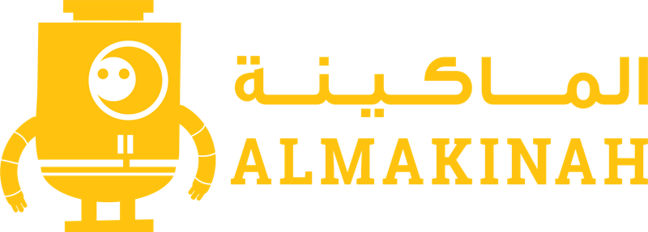

AlMakinah · FireUp full-stack bootcamp
A 12-week, full-time immersive bootcamp: 600 hours from programming concepts to a full-stack web developer with a portfolio. WUZZUF ran the technical assessment that shortlisted applicants for FireUp in March 2017 and for FireUp 2.0 later that year, gave the students career sessions such as a Tech CV Writing workshop, and connected graduates with employers.